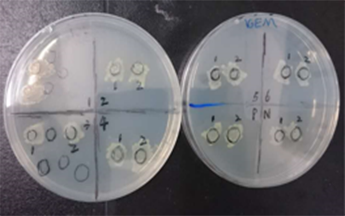

overview

We are proud to be part of the interlab study. Although we are a Software Team, this never separate us from experiments and never extinguish our passions for contributing our efforts for iGEM and Synthetic biology community.

This year, Interlab study provide detailed protocol to eliminate as much difference as they can, and find a way to make OD/FI measurement conducted by different machine comparable.